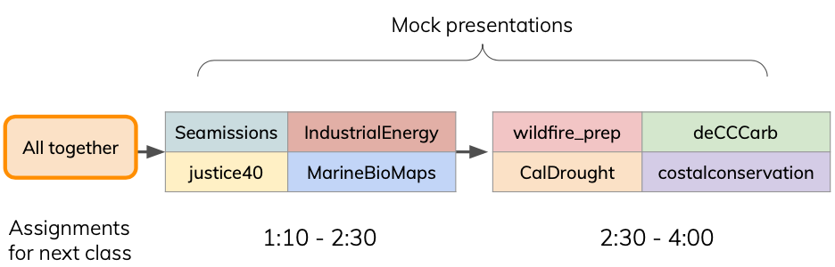
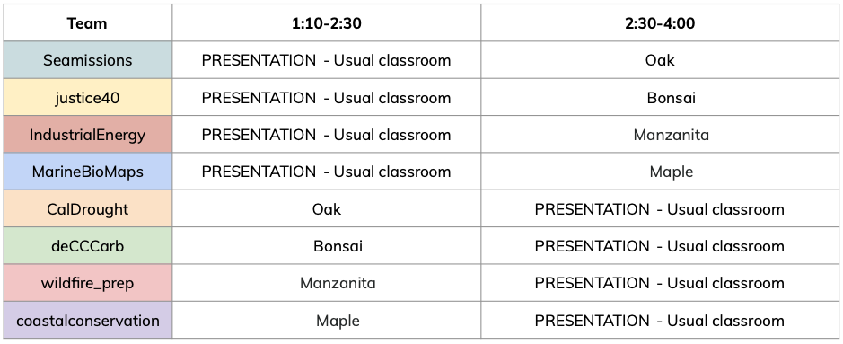
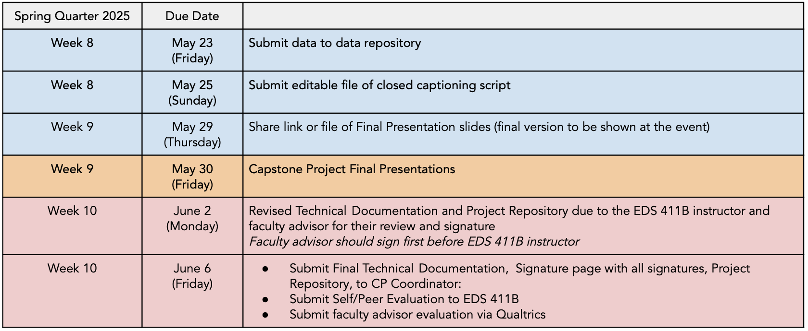
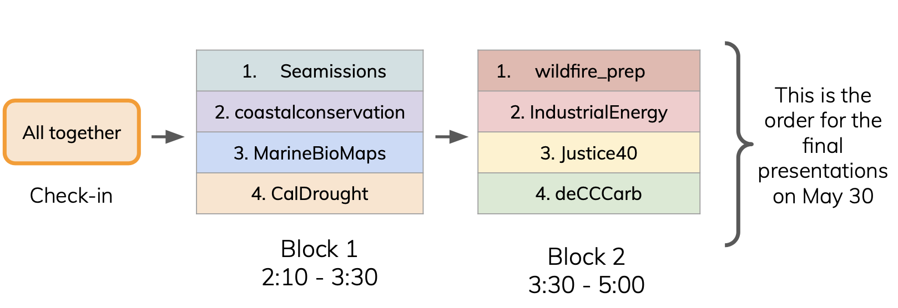

Week 8
Materials
Schedule
The class will be divided in two blocks from 1:10 to 2:30 and from 2:30 to 4:00. Each team will present and provide feedback to other teams as follows:

Your theam should work on their project outside of their “presentation block”. The following rooms are reserved for you so you have a dedicated workspace during our usual class time. You’re welcome to use other places to work.

Upcoming deadlines

To do by next week
📊 Complete data archival
When? Due on Friday, May 23 at 5 PM.
How? Submit data’s DOI or explain why there is no data archival using this Google form.
Instructions
Friday, May 23 is the final due date to archive your capstone project data. This is an academic requirement.
Use this week and next to:
- Discuss with your advisor or client what data (if any) should be archived as part of the project deliverables.
- Read through the Archiving and Preserving Your Data information by the Library RDS team for detailed guidelines about what to archive and the submission process to Dryad.
- If necessary, make an appointment with the RDS team (rds@library.ucsb.edu) to discuss archival of data associated with your capstone project.
💬 Submit editable file of closed captioning script
When? Due on Sunday, May 25 at midnight.
How? Upload as a Word (.doc) to this Box folder. Not PDF.
Instructions
- Don’t need to create a script but submit it if you have one; outline or working notes are fine
- Provide as much information as possible about what you will be saying in your presentation to assist the live closed captioner and increase caption accuracy
- All proper names and technical words at minimum, but more detail is helpful
- Word (.doc) format preferred, not PDF, can even be slide notes (must be editable text)
- Upload this Box folder no later than Sunday, May 25 midnight.
🎤 Prepare final presentation and Q&A
When? Due by next class Wednesday, May 28.
How? Add slides to shared drive.
Instructions
- Incorporate the feedback you received today and streamline your presentation
- Practice at least once with your faculty advisor
- Prepare for Q&A (check class slides!!!)
- Schedule extra practice presentations or feedback sessions with TA or instructor
- You got this!
🧰 Update Technical Documentation and clean repositories
When? Due last day of quarter, Friday June 6.
Instructions
- Discuss feedback with your team
- Start working on updating your TD and repositories
- Contact advisors or clients for clarification and reply to comments within the document as needed.
- Update GitHub repositories
- Final versions due in two weeks!
💥 Keep implementing your project!

Schedule for next class
